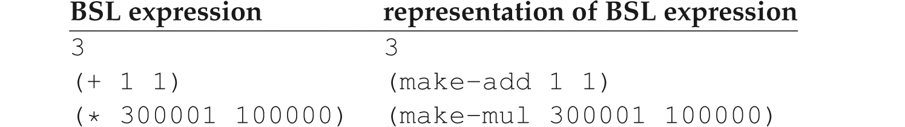
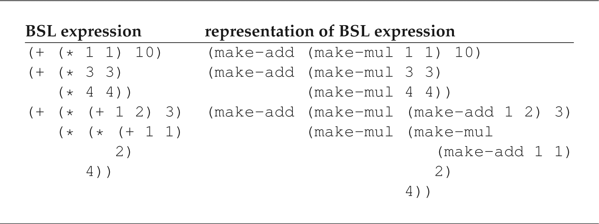
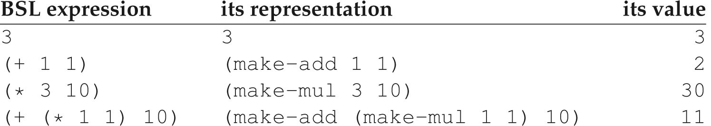
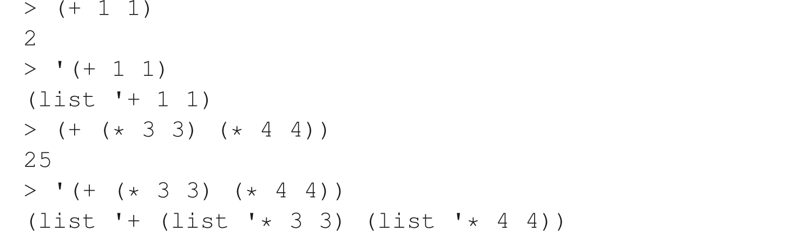
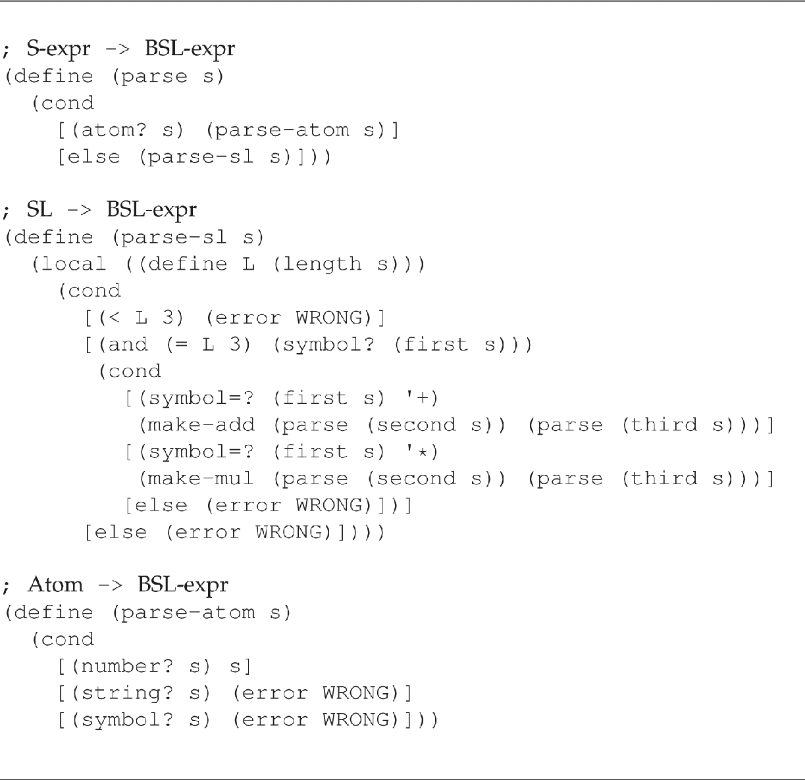

21.1 Interpreting Expressions
Our first task is to agree on a data representation for BSL programs. That is, we must figure out how to represent a BSL expression as a piece of BSL data. At first, this sounds strange and unusual, but it is not difficult. Suppose we just want to represent numbers, additions, and multiplications for a start. Clearly, numbers can stand for numbers. An addition expression, however, calls for compound data because it contains two expressions and because it is distinct from a multiplication expression, which also needs a data representation.
Following chapter 5, a straightforward way to represent additions and multiplications is to define two structure types, each with two fields:
(define-struct add [left right])
(define-struct mul [left right])
The intention is that the left field contains one operand—the one to the “left” of the operator—and the right field contains the other operand. The following table shows three examples:

The next question concerns an expression with sub-expressions:
(+ (* 3 3) (* 4 4))
The surprisingly simple answer is that fields may contain any value. In this particular case, left and right may contain representations of expressions, and you may nest this as deeply as you wish. See figure 124 for additional examples.

Figure 124: Representing BSL expressions in BSL
Exercise 345. Formulate a data definition for the representation of BSL expressions based on the structure type definitions of add and mul. Let’s use BSL-expr in analogy for S-expr for the new class of data.
Translate the following expressions into data:
1. (+ 10 -10)
2. (+ (* 20 3) 33)
3. (+ (* 3.14 (* 2 3)) (* 3.14 (* -1 -9)))
Interpret the following data as expressions:
1. (make-add -1 2)
2. (make-add (make-mul -2 -3) 33)
3. (make-mul (make-add 1 (make-mul 2 3)) 3.14) 
Here “interpret” means “translate from data into information.” In contrast, “interpreter” in the title of this chapter refers to a program that consumes the representation of a program and produces its value. While the two ideas are related, they are not the same.
Now that you have a data representation for BSL programs, it is time to design an evaluator. This function consumes a representation of a BSL expression and produces its value. Again, this function is unlike any you have ever designed so it pays off to experiment with some examples. To this end, either you can use the rules of arithmetic to figure out what the value of an expression is or you can “play” in the interactions area of DrRacket. Take a look at the following table for our examples:

Exercise 346. Formulate a data definition for the class of values to which a representation of a BSL expression can evaluate.
Exercise 347. Design eval-expression. The function consumes a representation of a BSL expression and computes its value.
Exercise 348. Develop a data representation for Boolean BSL expressions constructed from #true, #false, and, or, and not. Then design eval-bool-expression, which consumes (representations of) Boolean BSL expressions and computes their values. What kind of values do these Boolean expressions yield?
Convenience and parsing S-expressions offer a convenient way to represent BSL expressions in our programming language:

By simply putting a quote in front of an expression, we get ISL+ data.
Interpreting an S-expression representation is clumsy, mostly because not all S-expressions represent BSL-exprs. For example, #true, "hello", and '(+ x 1) are not representatives of BSL expressions. As a result, S-expressions are quite inconvenient for the designers of interpreters. Programmers invented parsers to bridge the gap between convenience of use and implementation. A parser simultaneously checks whether some piece of data conforms to a data definition and, if it does, builds a matching element from the chosen class of data. The latter is called a parse tree. If the given data does not conform, a parser signals an error, much like the checked functions from chapter 6.3.
Figure 125 presents a BSL parser for S-expressions. Specifically, parse consumes an S-expr and produces a BSL-expr—if and only if the given S-expression is the result of quoting a BSL expression that has a BSL-expr representative.

Figure 125: From S-expr to BSL-expr
Exercise 349. Create tests for parse until DrRacket tells you that every element in the definitions area is covered during the test run.
Exercise 350. What is unusual about the definition of this program with respect to the design recipe?
Note One unusual aspect is that parse uses length on the list argument. Real parsers avoid length because it slows the functions down.
Exercise 351. Design interpreter-expr. The function accepts S-expressions. If parse recognizes them as BSL-expr, it produces their value. Otherwise, it signals the same error as parse.